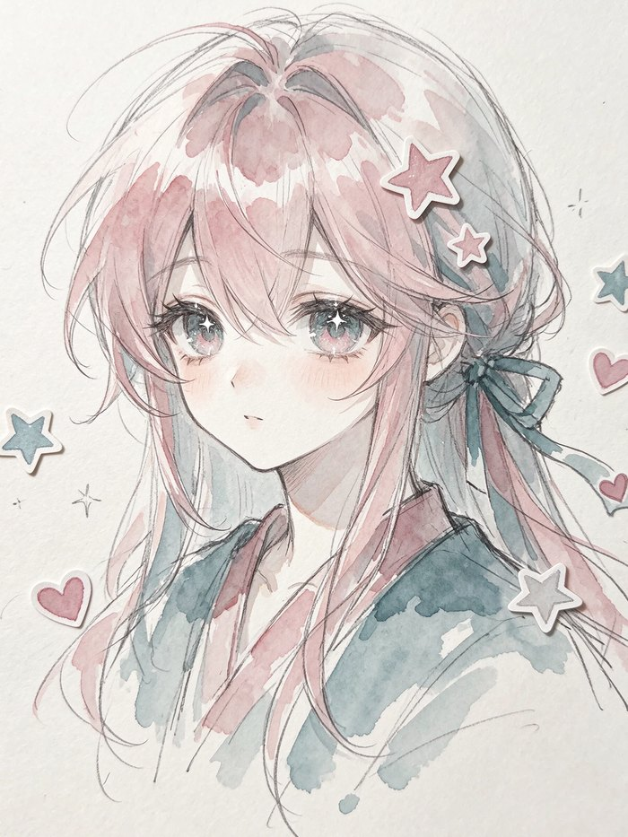
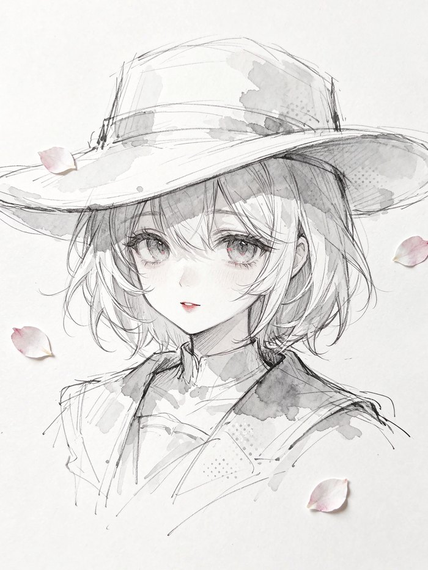
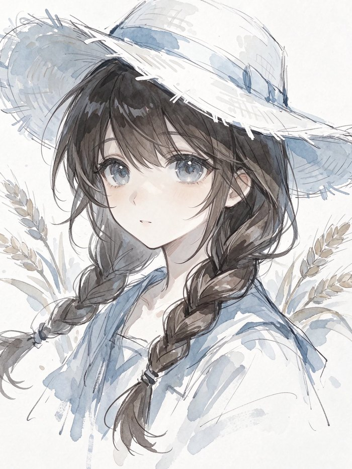
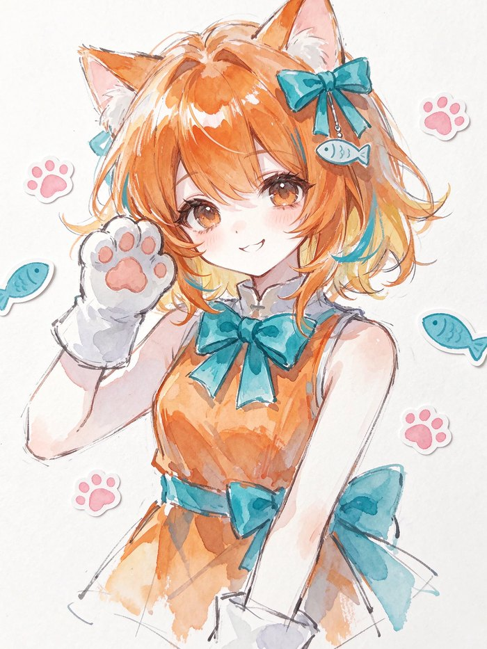
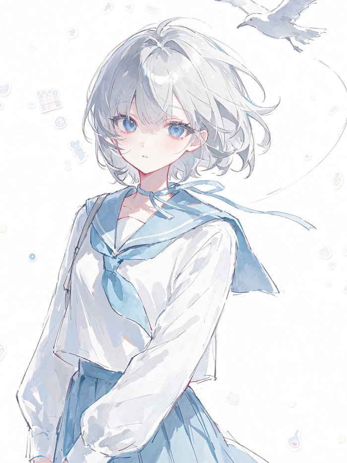
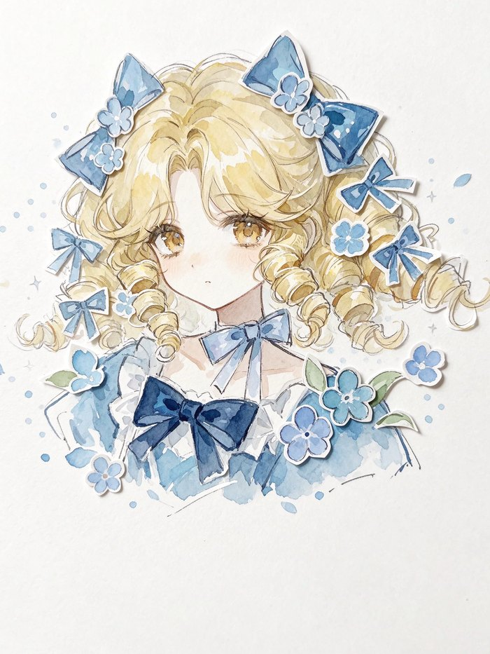
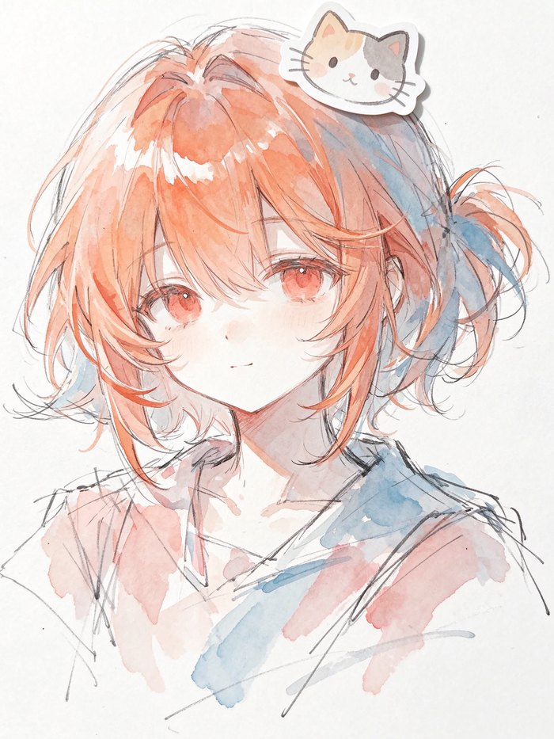
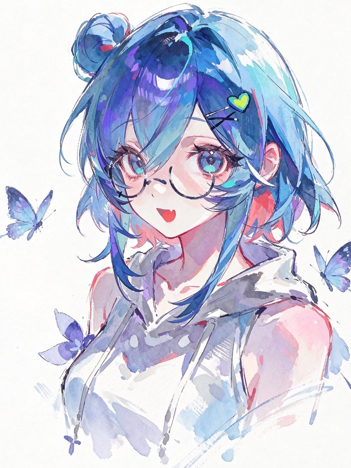
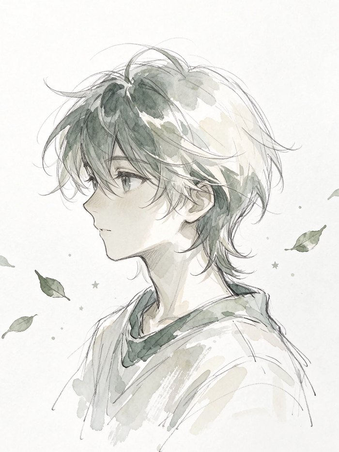

水彩手绘
WATERCOLOR · KREA 2 在线查看模型 ↗纸纹、晕染、留白——水彩的笔触走向能被稳定复现，换题材也不跑味。
- BASE MODEL
- krea/Krea-2-Turbo
- MODEL TYPE
- LoRA
- TASK
- 文生图
- SUB VISION
- KREA_2_TURBO
- DATASET
- 50 张
- STEPS
- 6,000
- TRAINER
- DiffSynth-Studio
- LICENSE
- Apache-2.0
- TRIGGER
- 无
- AUTHOR
- ykf122945dcz
- MODEL ID
- ykf122945dcz/Shuicai_Shouhui_Krea2_Lora
KREA 2效果预览示例 10 张








